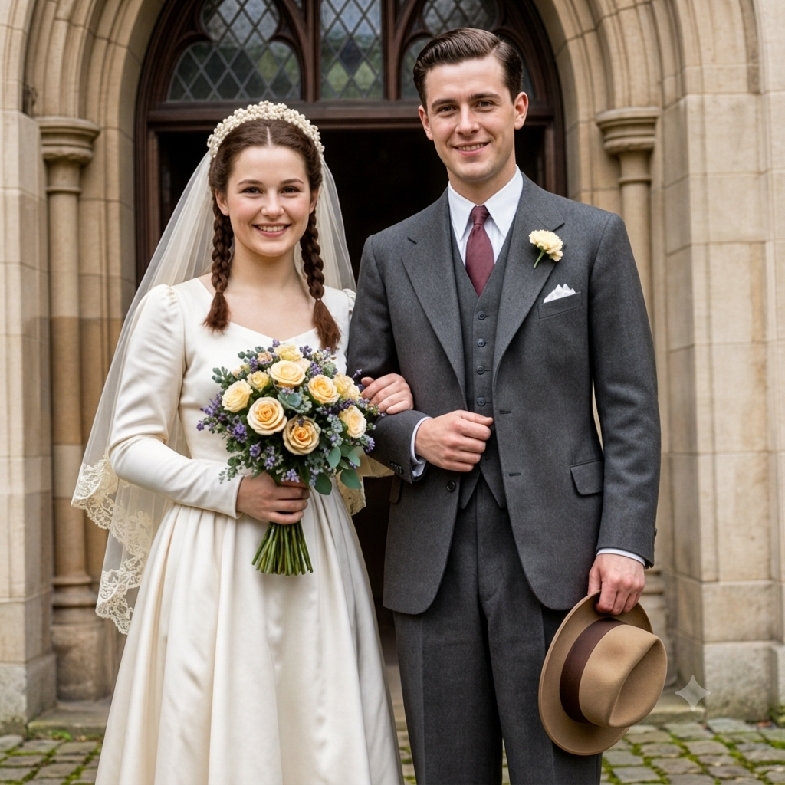
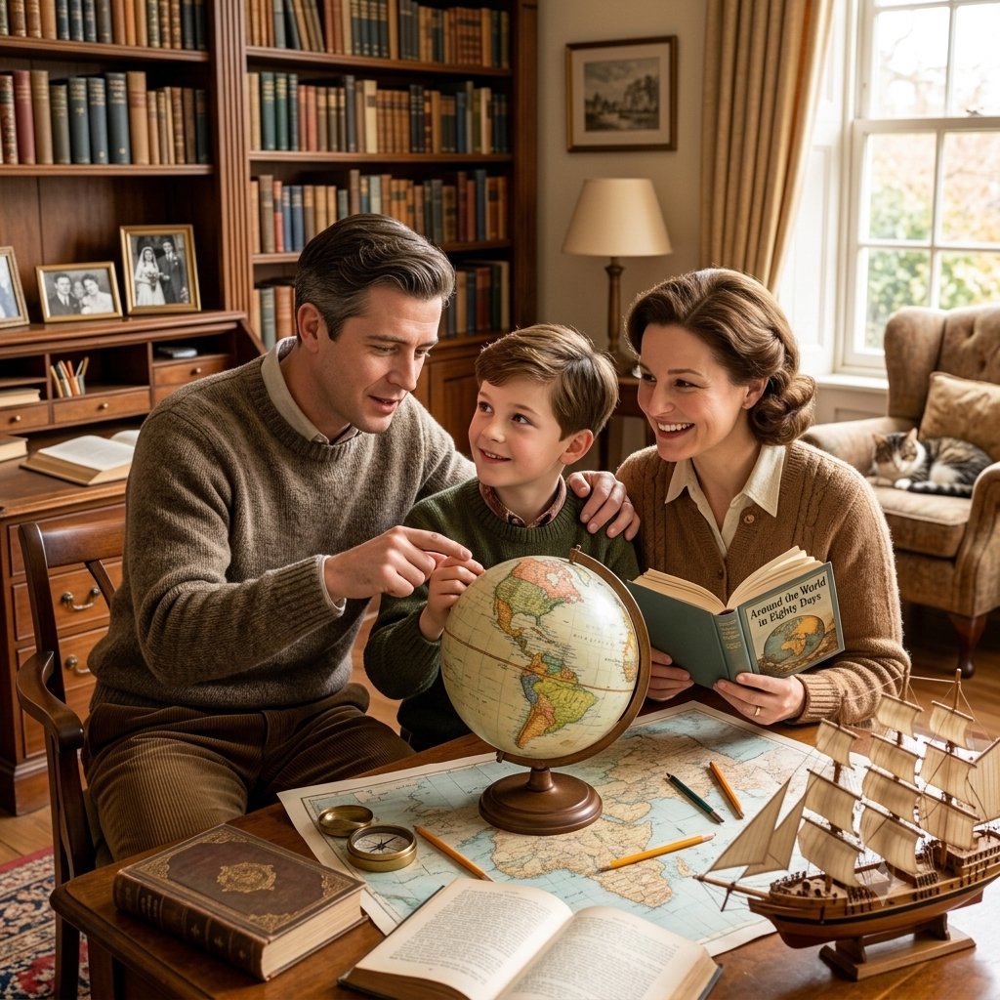
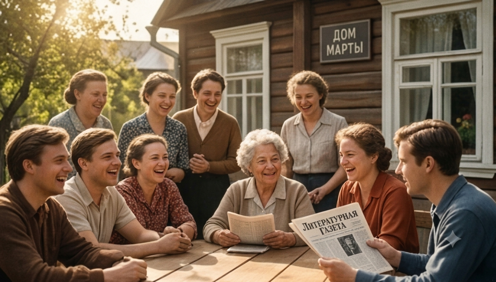
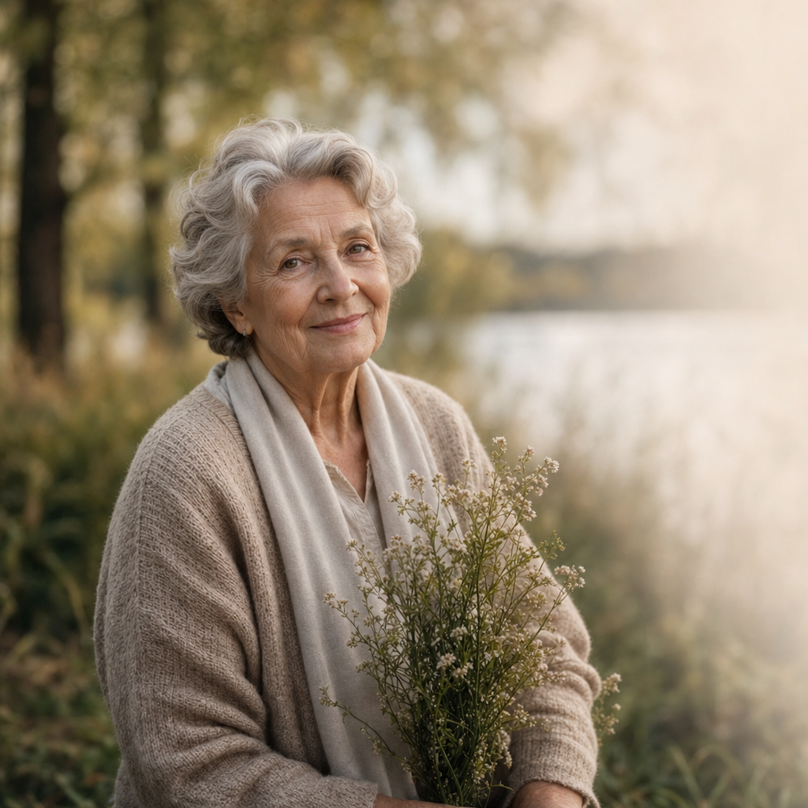
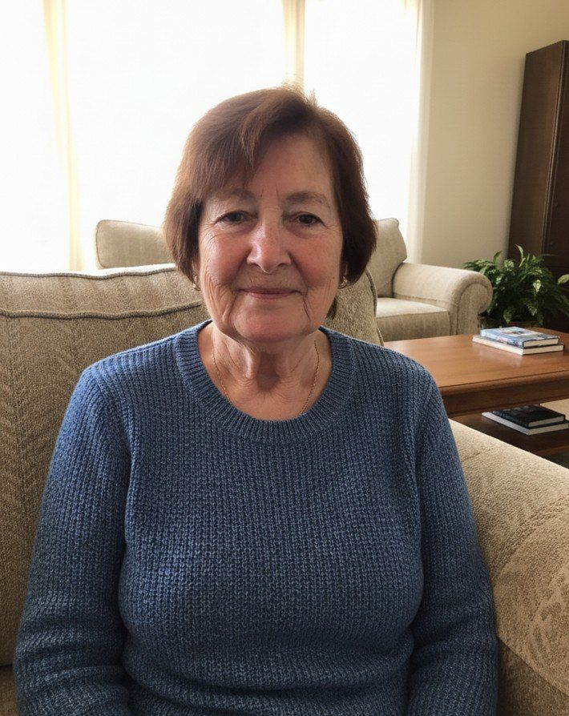
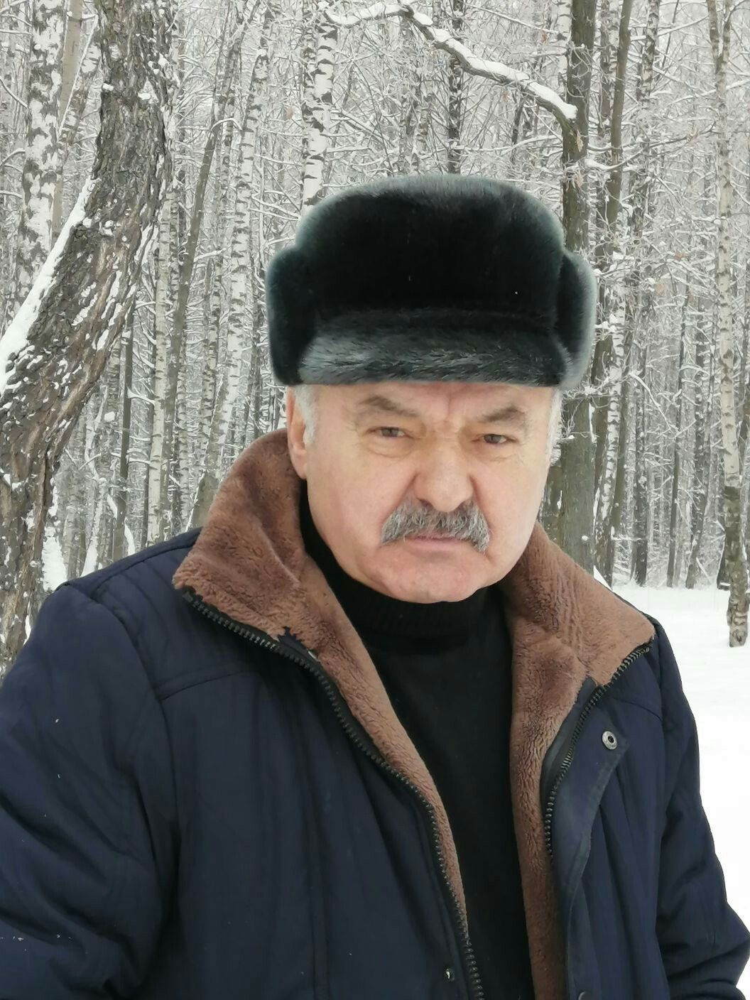

Лет преподавания
Литература, которую она открывала ученикам как разговор о жизни, а не как список правил.
Светлой памяти
1938 — 2021
«Свет, который остаётся
с нами навсегда»
Елена Александровна родилась весной 1938 года в небольшом городе на берегу реки. С детства её отличали любознательность, мягкий характер и удивительная способность находить красоту в самых простых вещах — в утреннем свете, в запахе свежего хлеба, в тишине зимнего сада.
Всю жизнь она посвятила преподаванию литературы. Несколько поколений учеников вспоминают её негромкий голос, внимательный взгляд и умение слушать так, будто в этот момент для неё нет ничего важнее твоих слов. Дом её всегда был открыт: за большим столом собирались друзья, соседи, бывшие ученики.
Она любила долгие прогулки, письма от руки и осень. Оставила после себя не только тёплые воспоминания, но и главное — привычку относиться к людям с добротой. Мы храним память о ней светлой и благодарной.




Появилась на свет ранней весной в тихом городе на берегу реки.
Окончила университет и начала преподавать литературу в школе.
Вышла замуж; вскоре в доме зазвучали детские голоса.
Получила звание заслуженного учителя за многолетний труд.
Ушла из жизни, оставив тепло в сердцах близких и учеников.
Она умела слушать так, что рядом с ней становилось спокойно. Её уроки я помню до сих пор — не столько правила, сколько интонацию доброты.

Анна,Мама научила нас видеть красоту в мелочах и никогда не торопить хорошее. Её осенние прогулки стали нашей семейной традицией.
Дом Елены Александровны всегда был полон света и тихих разговоров. Мне не хватает её писем, написанных от руки.
Она была не просто учителем, а наставником, который верил в каждого ученика. Её доброта и мудрость остаются с нами навсегда.

Виктор,Бабушка учила нас ценить простые радости: запах свежего хлеба, пение птиц, закат. Эти уроки стали основой моей жизни.
Литература, которую она открывала ученикам как разговор о жизни, а не как список правил.
Дети, внуки и правнуки, для которых её дом всегда оставался местом тепла и покоя.
Привычка относиться к людям бережно — то, что она передала каждому, кто был рядом.